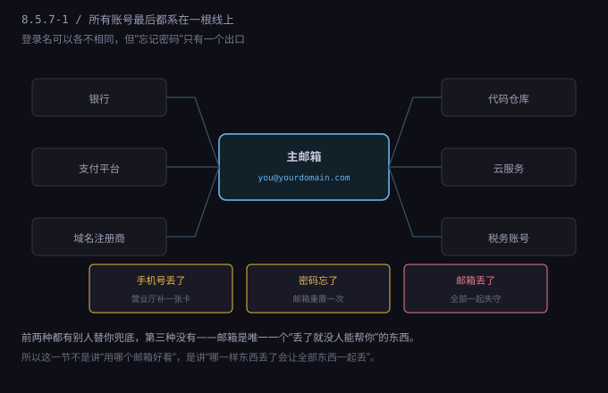
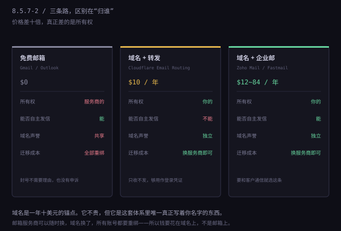
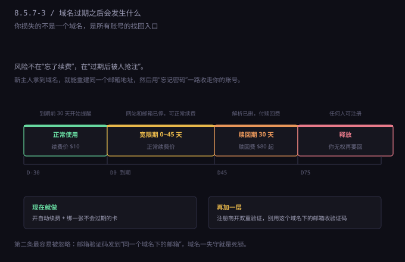

约 0.44 万字 · 3 张图 · 一个地址管着所有账号
先看一张图。这是你未来半年会注册的东西，全部挂在同一个地址上：

这张图要说的是单点故障。整套体系里，其他东西都有冗余：手机号有两张卡也行，地址有备用服务商也行， 银行可以开第二家。唯独邮箱不能有“两个主邮箱”——因为所有平台只认注册时那一个。
它同时也是攻击者第一眼盯上的东西。想进你的银行，不必破解银行，只要拿到你的邮箱， 点一次“忘记密码”，验证码就送到他手里了。这就是为什么很多安全建议里， 邮箱的优先级排在密码管理器之上——邮箱是那把能重配所有锁的总钥匙。
说“别用免费邮箱做主账号”，不是因为免费不好，是因为它有三个结构性问题，而这三个问题你都无法用努力弥补。
第一，所有权不在你手上。Gmail、Outlook、QQ 邮箱，你用的都是“服务”，不是“资产”。 服务条款里写得很清楚：服务商可以随时中止服务。它不需要给你理由，也没有仲裁机构。 你的申诉渠道是一个表单，回复你的是模板。
这件事平时不发生，一旦发生就是全部。有人因为一次批量风控被停号，里面存着十年的邮件、 几十个账号的绑定关系、还有所有发票和合同——这些都不是“数据丢失”，是“证据链断了”。
第二，找回路径握在别人手里。免费邮箱的找回方式通常是：备用邮箱、绑定手机号、安全问题。 如果你绑的是虚拟号（8.5.5 讲过，虚拟号会失效），备用邮箱又是同一个服务商的另一个账号， 那这条链就是闭环的，一出问题全锁死。
更麻烦的一种：异地登录触发风控。你从国内登录一个注册在美国的账号， 平台判定“异常位置”，要求手机验证；手机验证失败，要求回答安全问题；安全问题是你三年前随手填的。 这条链断在第一步，后面全无解。
第三，域名声誉是共享的。@gmail.com 这个域名下面有几亿用户， 其中一部分在发垃圾邮件、注册小号、做薅羊毛。所以很多 B2B 平台对免费邮箱的注册有额外审查—— 不是歧视，是因为这个域名下的坏样本太多，模型学出来的结论就是“这个来源的可疑度更高”。
实际影响是：用免费邮箱注册 Stripe、Mercury、AWS 这类平台，通过率明显低于用域名邮箱， 有些甚至直接不接受。这不是玄学，是风控打分里的一项。
三个问题合起来，结论就很清楚：免费邮箱适合当“收垃圾邮件的地方”，不适合当“身份”。
域名邮箱的原理很简单：邮箱地址由两部分组成，@ 前面是账号，后面是域名。
免费邮箱把这两部分捆在一起卖给你，所以你换不了任何一半。
域名邮箱把后一半拆出来，让你自己持有。

这个拆分的价值在于可迁移。今天用 Zoho，明年觉得不好用，换成 Fastmail，
把 DNS 里的 MX 记录一改，地址还是 you@yourdomain.com，所有平台不需要重绑。
对比一下：如果你用 Gmail 注册了三十个平台，想换到 Outlook，要挨个登录改邮箱， 每个改动都触发一次验证邮件，其中总有几个平台你忘了密码、或者已经不支持改邮箱。 这件事我做过一次，花了两个周末。
域名本身一年十美元左右。这是整套出海体系里最便宜的一项支出，也是唯一一项 “写着你名字、可以传给别人的资产”。公司名可以改，注册地址可以换，域名是你的。
路一：域名 + 邮件转发（最省钱）。
做法：买一个域名，把域名托管到 Cloudflare（免费），在控制台打开 Email Routing，
把 you@yourdomain.com 转发到你的 Gmail。
整个过程十分钟，成本只有域名本身的十美元。
优点是免费、开箱即用、带 catch-all（任何前缀的信都转给你），
注册小网站时随手写 netflix@yourdomain.com 也能收到，方便日后追溯是谁泄露了你的地址。
缺点是不能发信。它只负责收，回复邮件还得从 Gmail 里用“以其他地址发送”， 而那条路要求你有一个能发信的 SMTP 服务。所以这条路适合“只用作登录凭证”的场景： 平台验证、找回密码、收账单。
路二：域名 + 企业邮箱（最通用）。
做法：买域名，在 Zoho Mail、Fastmail、Google Workspace 里选一家，按向导添加 MX 记录。 半小时能通，等 DNS 生效通常几十分钟到几小时。
优点是能收能发、有独立域名声誉、可以开多个地址（support@、billing@、legal@）。 缺点是要花钱，而且要维护 DNS 记录。
路三：自建邮件服务器（不建议）。
技术上可行，实际上是一场灾难。IP 声誉要从零养，发出去的邮件大概率进垃圾箱； IP 段被列进黑名单要自己申诉；反垃圾、反病毒、备份、迁移全要自己扛。 省下的钱不够买你花在上面的时间。这条路我只在“完全不想让第三方看到邮件内容”的场景下推荐。
大多数人的正确选择是路一 + 路二混用：主邮箱用企业邮箱（能发信、能长期用）， 其余几十个不重要的小网站全部用转发别名（免费、可追溯、随时关掉）。
讲到这里，有个反直觉的结论：用了域名邮箱，你的风险不是变小了，是换了一个位置。 原来风险在服务商手里，现在风险在域名上。

域名过期的流程比多数人以为的长，也比多数人以为的贵：
真正的危险在第四步之后。新主人拿到域名，可以立刻重建同一个邮箱地址
you@yourdomain.com，然后去各大平台点“忘记密码”。
验证邮件发到那个地址——现在那是他的邮箱。
这条攻击路径不需要技术，只需要耐心。域名的抢注机器人 7×24 小时盯着过期列表， 专挑“有流量、有外链、有注册记录”的域名。你的域名在它们眼里不是网站，是一把钥匙。
有两个动作必须现在做，别等：
一，开自动续费，绑一张不会过期的卡。注意“不会过期”这四个字—— 很多人的卡三年到期，自动续费就断在那一天，而域名提醒邮件正好发进了那个已经失效的邮箱。
二，注册商账号不要用这个域名下的邮箱。这是最容易踩的死锁： 域名过期 → 邮箱失效 → 收不到注册商的找回邮件 → 登不进注册商 → 续不了费。 用另一个完全独立的邮箱（甚至手机号 + 验证器 App）来保护注册商账号。
顺带一条：给域名开注册锁（ registrar lock）和双重验证。 转移域名需要授权码，授权码只会发到注册邮箱——所以第一条防线还是那个邮箱。
有了域名之后，不要在所有的表单里填同一个地址。按用途分层，出问题时能立刻定位，也能立刻切断。
| 层 | 地址形式 | 用在哪 | 原则 |
|---|---|---|---|
| 主邮箱 | me@yourdomain.com | 银行、支付平台、域名注册商、代码仓库 | 不外露，不注册小网站，不开自动转发 |
| 业务邮箱 | support@ billing@ | 客户、发票、平台审核 | 可以公开，可以多人共用 |
| 别名 | github@yourdomain.com | 每个平台一个独立地址 | 泄露能定位，关掉不影响主号 |
| 一次性 | 临时邮箱服务 | 下载白皮书、试用品、注册了就不再用 | 绝不用在能产生资产的地方 |
别名这一层是最被低估的。用 平台名@yourdomain.com 注册，好处有三个：
如果服务商支持 catch-all（Cloudflare Email Routing、Zoho 都支持），你不需要提前创建这些地址， 随便写什么前缀都能收到。这个功能很方便，也有代价：垃圾邮件会变多， 因为任何拼错的前缀都会落到你这里。介意的话就关掉 catch-all，改成按需创建。
还有一条硬规矩：主邮箱不要开自动转发到外部地址。 转发链一旦建立，等于把主钥匙的复印件放在另一个信箱里，而那个信箱的安全级别通常更低。
自己搭邮箱之后，会遇到一个新问题：发出去的邮件进别人的垃圾箱，或者干脆被拒收。 原因是你没有告诉全世界“这个域名是我在发信”。
三条记录，缺一不可：
SPF——一条 TXT 记录，列出“允许用这个域名发信的服务器”。
格式长这样：v=spf1 include:zoho.com ~all。
收件方查这条记录，如果发信服务器不在列表里，就判可疑。
DKIM——给每封邮件盖一个数字签名，收件方用 DNS 里的公钥验证。 作用是证明“这封信在传输途中没被改过”。服务商后台一般能一键生成，你把两条 CNAME 抄到 DNS 里就行。
DMARC——告诉收件方“SPF 和 DKIM 都失败时怎么办”。
最小可用写法：v=DMARC1; p=none; rua=mailto:dmarc@yourdomain.com。
p=none 是只报告不拦截，先跑两周看看报告，再改成 quarantine。
这三条不是可选项，是“邮件能不能进收件箱”的门槛。Gmail 和 Yahoo 从 2024 年起 对批量发信者有明确要求，没有 DMARC 的域名，邮件大概率直接被丢。
一个容易忽略的细节：验证邮件收不到，未必是对方没发。 先看垃圾箱，再看域名有没有配 SPF/DKIM，最后看对方是不是把整个域名拉黑了 （共享主机、便宜的邮件服务商常被整段拉黑）。
把这一节压成一份可以照着做的清单：
me@，只给六类账号用：银行、支付、注册商、代码仓库、云服务、税务。p=none 观察两周。四种常见失败，以及对应的处理：
| 现象 | 多半是 | 怎么办 |
|---|---|---|
| 平台说“不支持此邮箱” | 域名太新或曾被用于垃圾邮件 | 换一个主流服务商收信，或先用免费邮箱过这一关 |
| 收不到验证邮件 | 进了垃圾箱，或 SPF/DKIM 没配 | 先查垃圾箱，再查 DNS，最后问对方是否拉黑域名 |
| 能收不能发 | 用的转发方案，本来就不发信 | 升级到企业邮箱，或从 Gmail 用“以其他地址发送” |
| 域名突然打不开 | 过期、欠费、被投诉暂停 | 立刻去注册商查状态，赎回期内还有救 |
第一行那个失败值得多说一句。有些平台（尤其是金融类）会拒绝“注册不满 30 天”的域名， 因为新域名是欺诈的高发特征。这不是你能改的，只能等——域名放着不用也会变老。 所以一个实用的做法是：域名先买着，什么都不干，等三个月再拿来注册重要账号。
最后一件事，关于“要不要用免费邮箱做备胎”。我的建议是：要，但只能当备胎。 主邮箱在域名上，备用邮箱用一个免费邮箱，两者互相不转发、不同密码、不同恢复方式。 这样任何一边出事，另一边还能救。
但绝不要把次序反过来——用免费邮箱当主账号、域名邮箱当备用。 因为决定成败的不是“有没有两个”，是“出事的时候，哪一个还活着”。 免费邮箱被关的概率，远高于你忘了续费域名的概率。
@ 后面那半拆出来自己持有。换服务商，地址不变，所有账号不用重绑。